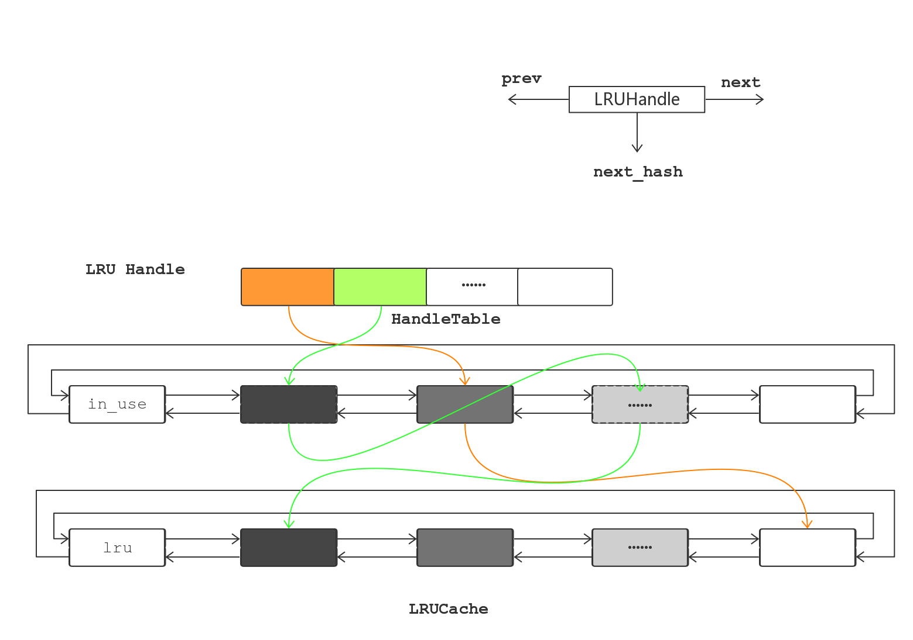

LRU (Least Recently Used) 是一种常见的Cache缓存策略，根据数据的历史访问记录进行淘汰数据，将最近最少使用的内容替换掉。其核心思想是如果数据最近被访问过，那么再被访问的概率比较高。
LevelDB中LRU缓存的实现
LRUHandle：LRUCache的管理对象
struct LRUHandle {
void* value; // 存储的值
void (*deleter)(const Slice&, void* value);
LRUHandle* next_hash; // HashTable中的下一个节点
LRUHandle* next; // LRU队列下一个节点
LRUHandle* prev; // LRU队列上一个节点
size_t charge; // 占用的内存
size_t key_length; // key值的长度
bool in_cache; // 缓存是否命中
uint32_t refs; // 引用次数
uint32_t hash; // key的哈希值
char key_data[1]; // key的值
};

LRUCache
LRUCache的每个Item是一个LRUHandle，而LRUHandle是同时放在双向链表和哈希表HandleTable中管理。原因为：
- 当单纯使用链表时，查询效率为O(n)，没有哈希表的O(1)高效。
当单纯使用哈希表时，却无法得知缓存记录的先后顺序，无法快速定位到可被回收的缓存记录。
查询 插入 删除 排序 链表 O(n) O(1) O(1) 支持 哈希表 O(1) O(1) O(1) 不支持
LevelDB巧妙地通过将两者结合，取长补短，利用哈希表的O(1)查询效率，利用双向链表维护对缓存记录按时间排序。
class LRUCache {
public:
LRUCache();
~LRUCache();
void SetCapacity(size_t capacity) { capacity_ = capacity; }
Cache::Handle* Insert(const Slice& key, uint32_t hash,
void* value, size_t charge,
void (*deleter)(const Slice& key, void* value));
Cache::Handle* Lookup(const Slice& key, uint32_t hash);
void Release(Cache::Handle* handle); // 给用户使用，用于显式解除用户对缓存记录的引用
void Erase(const Slice& key, uint32_t hash); // 将缓存从lru_和哈希表中删除并解除引用
void Prune(); // 将全部记录同时从哈希表和lru_中删除
size_t TotalCharge() const;
private:
void LRU_Remove(LRUHandle* e) {
e->next->prev = e->prev;
e->prev->next = e->next;
}
void LRU_Append(LRUHandle*list, LRUHandle* e) {
// 将e插在list之前
e->next = list;
e->prev = list->prev;
e->prev->next = e;
e->next->prev = e;
}
void Ref(LRUHandle* e);
void Unref(LRUHandle* e);
bool FinishErase(LRUHandle* e);
mutable port::Mutex mutex_;
size_t usage_;
size_t capacity_;
// 首次insert后，引用计数refs=2
// lru_和in_use_用于区别哪些缓存记录是用户正在使用(in_use_)，哪些用户已经不用(lru_)
// 当Cache超出容量或相同key的新缓存插入时，删除用户正在引用的缓存记录会造成用户访问未定义的内容，程序崩溃。
LRUHandle lru_; // 仅被cache自身引用缓存记录的链表，refs==1
LRUHandle in_use_; // 正在被外部引用的缓存记录的链表，refs>=2
HandleTable table_; // 哈希表HandleTable的实现在最下面
};
void LRUCache::Ref(LRUHandle* e) {
if (e->refs == 1 && e->in_cache) { // If on lru_ list, move to in_use_ list.
LRU_Remove(e);
LRU_Append(&in_use_, e);
}
e->refs++;
}
void LRUCache::Unref(LRUHandle* e) {
assert(e->refs > 0);
e->refs--;
if (e->refs == 0) { // Deallocate.
assert(!e->in_cache);
(*e->deleter)(e->key(), e->value);
free(e);
} else if (e->in_cache && e->refs == 1) { // No longer in use; move to lru_ list.
LRU_Remove(e);
LRU_Append(&lru_, e);
}
}
Cache::Handle* LRUCache::Lookup(const Slice& key, uint32_t hash) {
MutexLock l(&mutex_);
LRUHandle* e = table_.Lookup(key, hash);
if (e != NULL) {
Ref(e);
}
return reinterpret_cast<Cache::Handle*>(e);
}
Cache::Handle* LRUCache::Insert(
const Slice& key, uint32_t hash, void* value, size_t charge,
void (*deleter)(const Slice& key, void* value)) {
MutexLock l(&mutex_);
LRUHandle* e = reinterpret_cast<LRUHandle*>(
malloc(sizeof(LRUHandle)-1 + key.size()));
e->value = value;
e->deleter = deleter;
e->charge = charge;
e->key_length = key.size();
e->hash = hash;
e->in_cache = false;
e->refs = 1;
memcpy(e->key_data, key.data(), key.size());
if (capacity_ > 0) {
e->refs++; // for the cache's reference.
e->in_cache = true;
LRU_Append(&in_use_, e);
usage_ += charge;
FinishErase(table_.Insert(e)); // 如果哈希表中存在相同的数据，将旧数据从链表中删除
} // else don't cache. (Tests use capacity_==0 to turn off caching.)
while (usage_ > capacity_ && lru_.next != &lru_) {
LRUHandle* old = lru_.next;
FinishErase(table_.Remove(old->key(), old->hash));
}
return reinterpret_cast<Cache::Handle*>(e);
}
ShardedLRUCache
因为LevelDB是多线程的，每个线程访问缓存区时都会被锁住。为了多线程访问，尽可能快速，减少锁开销，LevelDB在LRUCache上又封装了一层ShardedLRUCache，内部有16个LRUCache。这样查找key时，会先计算key属于哪个分片，然后在相应的LRUCache中查找，减少多线程访问时锁的开销。
static const int kNumShardBits = 4;
static const int kNumShards = 1 << kNumShardBits; // = 16
class ShardedLRUCache : public Cache {
private:
LRUCache shard_[kNumShards];
port::Mutex id_mutex_;
uint64_t last_id_;
static inline uint32_t HashSlice(const Slice& s) {
return Hash(s.data(), s.size(), 0);
}
static uint32_t Shard(uint32_t hash) {
// 用hash值最高的4位（小于16），来决定使用shard_[i]
return hash >> (32 - kNumShardBits);
}
public:
explicit ShardedLRUCache(size_t capacity) : last_id_(0) {
// 将capacity平分，(A+(B-1))/B = int(A/B) + (A%B ? 1 : 0)
const size_t per_shard = (capacity + (kNumShards - 1)) / kNumShards;
for (int s = 0; s < kNumShards; s++) {
shard_[s].SetCapacity(per_shard);
}
}
virtual ~ShardedLRUCache() { }
virtual Handle* Insert(const Slice& key, void* value, size_t charge,
void (*deleter)(const Slice& key, void* value)) {
const uint32_t hash = HashSlice(key);
return shard_[Shard(hash)].Insert(key, hash, value, charge, deleter);
}
virtual Handle* Lookup(const Slice& key) {
const uint32_t hash = HashSlice(key);
return shard_[Shard(hash)].Lookup(key, hash);
}
virtual void Release(Handle* handle) {
LRUHandle* h = reinterpret_cast<LRUHandle*>(handle);
shard_[Shard(h->hash)].Release(handle);
}
virtual void Erase(const Slice& key) {
const uint32_t hash = HashSlice(key);
shard_[Shard(hash)].Erase(key, hash);
}
virtual void* Value(Handle* handle) {
return reinterpret_cast<LRUHandle*>(handle)->value;
}
virtual uint64_t NewId() {
MutexLock l(&id_mutex_);
return ++(last_id_);
}
virtual void Prune() {
for (int s = 0; s < kNumShards; s++) {
shard_[s].Prune();
}
}
virtual size_t TotalCharge() const {
size_t total = 0;
for (int s = 0; s < kNumShards; s++) {
total += shard_[s].TotalCharge();
}
return total;
}
};
附： HandleTable哈希表的实现
class HandleTable {
public:
HandleTable() : length_(0), elems_(0), list_(NULL) { Resize(); }
~HandleTable() { delete[] list_; }
LRUHandle* Lookup(const Slice& key, uint32_t hash) {
return *FindPointer(key, hash);
}
LRUHandle* Insert(LRUHandle* h) {
LRUHandle** ptr = FindPointer(h->key(), h->hash);
LRUHandle* old = *ptr;
h->next_hash = (old == NULL ? NULL : old->next_hash);
*ptr = h;
if (old == NULL) {
++elems_;
if (elems_ > length_) {
Resize();
}
}
return old;
}
LRUHandle* Remove(const Slice& key, uint32_t hash) {
LRUHandle** ptr = FindPointer(key, hash);
LRUHandle* result = *ptr;
if (result != NULL) {
*ptr = result->next_hash;
--elems_;
}
return result;
}
private:
uint32_t length_;
uint32_t elems_;
LRUHandle** list_;
LRUHandle** FindPointer(const Slice& key, uint32_t hash) {
LRUHandle** ptr = &list_[hash & (length_ - 1)];
while (*ptr != NULL &&
((*ptr)->hash != hash || key != (*ptr)->key())) {
ptr = &(*ptr)->next_hash;
}
return ptr;
}
void Resize() {
uint32_t new_length = 4;
while (new_length < elems_) {
new_length *= 2;
}
LRUHandle** new_list = new LRUHandle*[new_length];
memset(new_list, 0, sizeof(new_list[0]) * new_length);
uint32_t count = 0;
for (uint32_t i = 0; i < length_; i++) {
LRUHandle* h = list_[i];
while (h != NULL) {
LRUHandle* next = h->next_hash;
uint32_t hash = h->hash;
LRUHandle** ptr = &new_list[hash & (new_length - 1)];
h->next_hash = *ptr;
*ptr = h;
h = next;
count++;
}
}
assert(elems_ == count);
delete[] list_;
list_ = new_list;
length_ = new_length;
}
};